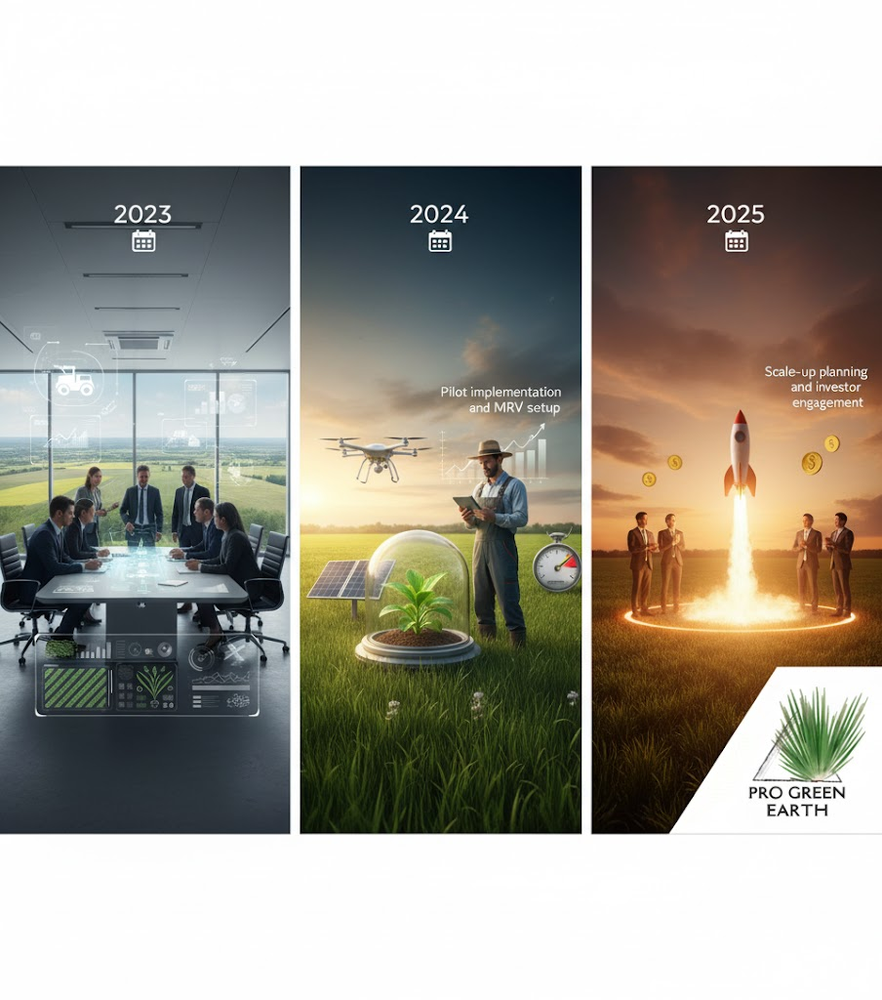

About Pro Green Earth
Restoring Rangelands. Restoring Livelihoods.
Working with communities and partners across Zambia's Western Province to scale regenerative land management that delivers measurable climate and economic outcomes.

About Pro Green Earth
Working with communities and partners across Zambia's Western Province to scale regenerative land management that delivers measurable climate and economic outcomes.
Pro Green Earth is a landscape restoration initiative focused on restoring the Barotse rangelands using community-led regenerative practices, rigorous measurement, and market-aligned climate finance.

We work in partnership with traditional authorities, government agencies, and local communities. Our approach combines improved grazing management, regenerative practices, and rigorous MRV to create measurable climate and livelihood outcomes.
Over the next multi-decade crediting period we expect substantial carbon removals, economic uplift for participating households, and durable improvements to ecosystem health.
Improved incomes and resilience for thousands of households.
Significant increases in soil carbon and biodiversity across restored landscapes.


Founder & Director — Agribusiness and program strategy

Head of Community Programs — Partnerships & livelihoods

Head of Agronomy & MRV — Science & monitoring
Investors, partners and civil society organisations can join us to scale restoration across Zambia's rangelands.
The project area includes Mongu, Limilunga, Nalolo, Senanaga and Sioma districts in Zambia's Western Province, spanning 1.2 million hectares.